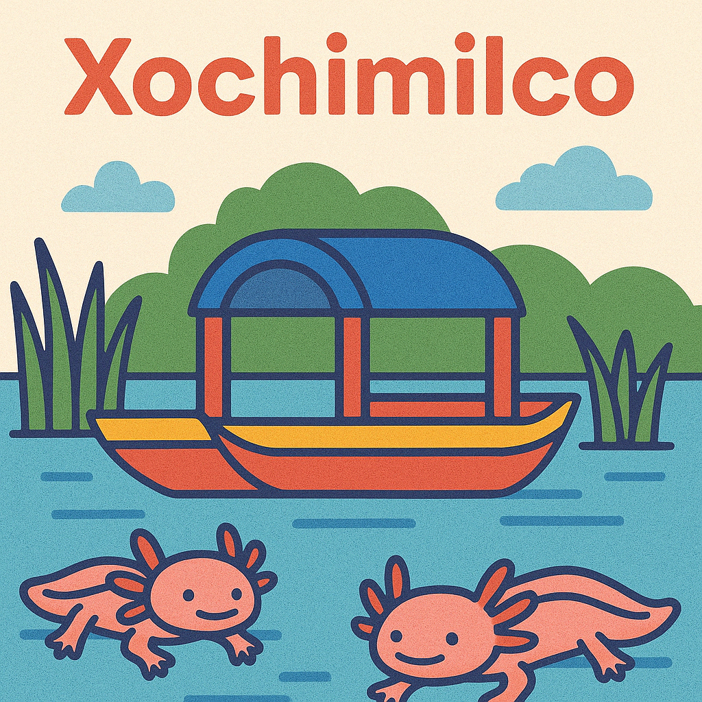

Cabecera
Xochimilco: tradición sobre el agua
Navega por los antiguos canales prehispánicos en una colorida trajinera mientras escuchas mariachis, disfrutas de botanas típicas y descubres la historia de este Patrimonio de la Humanidad.
Además de su ambiente festivo, Xochimilco guarda secretos fascinantes: chinampas, leyendas y una conexión profunda con la naturaleza y la cultura mexicana.
Ideal para familias, grupos de amigos y quienes buscan una experiencia alegre y pintoresca.
